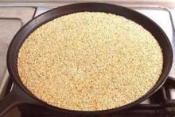
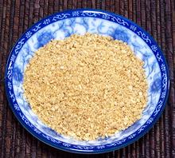

|
Toasted Sesame SeedsKorea, Japan, Southeast Asia | ||||
| Makes: Effort: Sched: DoAhead: |
1/2 cup ** 10 min Yes |
Toasted Sesame Seeds are an essential pantry item for cuisines of Korea, Japan and Southeast Asia - in Korean so important that "sesame seeds" in a recipe can be presumed to mean "toasted sesame seeds" | |||
| Toasted sesame seeds are available commercially from any Korean market, but they are fresher and better made at home, which is very easy. One thing - be certain the sesame seeds are not rancid. They are best bought from a Korean or other high volume Asian market. | |||||
|
|
1/2 |
c |
Sesame Seeds, white |
|
 |
Sesame Salt / Crushed SesameKorea - Kkae-sogum | Japan - Gomashio | ||||
| Makes: Effort: Sched: DoAhead: |
3 T * 4 min Yes |
This widely used seasoning is extremely easy to make, especially if you have already made a supply of toasted sesame seeds - and if you are cooking any Korean or Japanese recipes, you certainly should have plenty of toasted sesame on hand. | |||
| The amount of salt can vary from 15 to 1 up to 5 to 1. I like it near the low end, so this recipe is 13.6 to 1. The most common ratio in Japan seems to be 10 to 1. In Japan this is often made with toasted black sesame seeds instead of white, but it's a lot harder to tell when they are toasted. | |||||
|
|
3 2/3 |
T t |
Toasted Sesame (1) Salt |
|